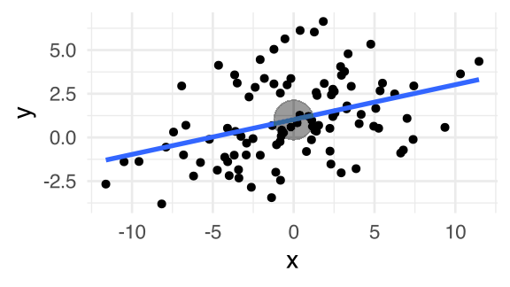
Mean-centering and numeric/categorical interactions
Data Analysis for Psychology in R 2
Elizabeth Pankratz (elizabeth.pankratz@ed.ac.uk)
Department of Psychology
University of Edinburgh
2025–2026
Course Overview
| Introduction to linear Models | Intro to linear regression |
| Interpreting linear models | |
| Testing individual predictors | |
| Model testing & comparison | |
| Linear model analysis | |
| Analysing Experimental Studies | Categorical predictors and dummy coding |
| Effect coding and manual post-hoc contrasts | |
| Assumptions and diagnostics | |
| Bootstrapping and confidence intervals | |
| Categorical predictors: Practice analysis |
| Interactions | Mean-centering and numeric/categorical interactions |
| Numeric/numeric interactions | |
| Categorical/categorical interactions | |
| Manual contrast interactions and multiple comparisons | |
| Interactions: Practice analysis | |
| Advanced Topics | Power analysis |
| Binary logistic regression I | |
| Binary logistic regression II | |
| Logistic regression: Practice analysis | |
| Exam prep and course Q&A |
Welcome-back warm-up
Welcome-back warm-up on Wooclap
wooclap.com, enter code BMLTOH
This week’s learning objectives
What does it mean to “mean-centre” a variable?
How does mean-centering a predictor affect how we interpret the model’s intercept and other slope coefficients?
How do we tell a model that an association between a predictor and the outcome depends on another predictor?
How do interactions change what a model’s slope coefficients mean?
Why did we practice finding the intercept?
Why did we practice finding the intercept?
Because what the intercept represents is very different when it’s in different places, relative to the data.
Right in the middle of the data:
Off to one side of the data:
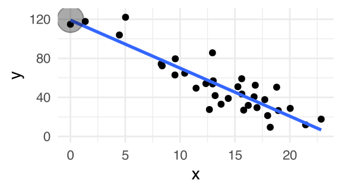
Totally outside of the data’s range:
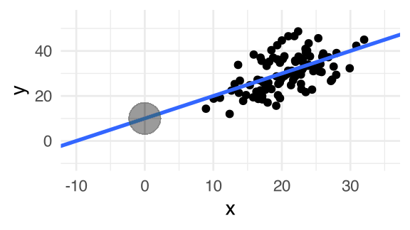
Why does this matter?
Sometimes data = 0 doesn’t make sense
Imagine using people’s height in cm to predict their UK shoe size.
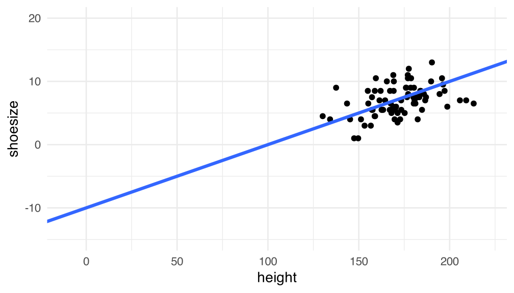- A height of 0 cm is nonsense!
- And the predicted shoe size of –10-ish is even more nonsense!
In case like this, it’s useful to transform our variable, so that the value zero is more sensible/meaningful.
Change what data = 0 represents
For example, if we make the value zero represent the mean height in our sample…
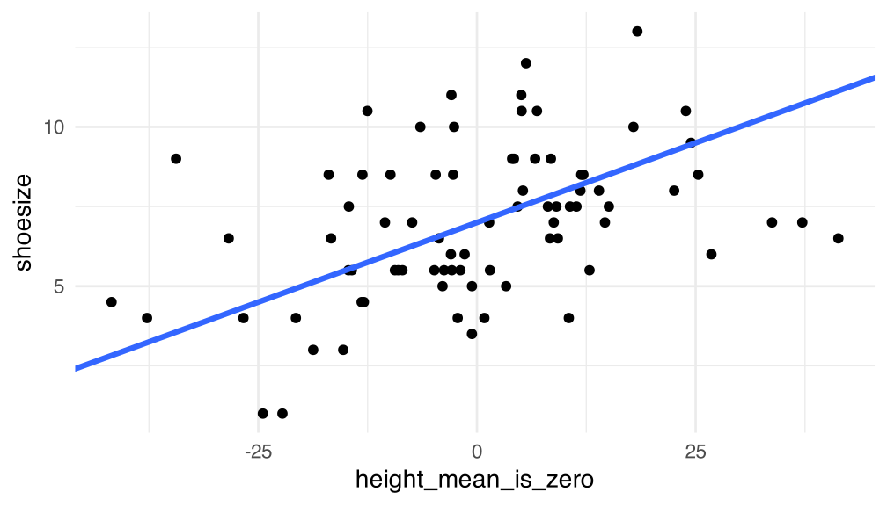… then the line’s intercept represents the UK shoe size we’d expect for someone with average height: 7.
That’s a LOT nicer than “for someone who’s 0 cm tall, their estimated shoe size is –10!”
Transforming variables like this is a really useful tool to make the model’s coefficients make more sense.
Where we are in the analysis workflow

A new tool in our toolkit: “Mean-centering”
To mean-centre a variable means to transform it so that the mean of the centered version is zero.
An example variable, x1:
| x1 |
|---|
| 1 |
| 8 |
| 3 |
| 2 |
| 6 |
The mean of x1:
\[ \begin{align} =& \frac{1 + 8 + 3 + 2 + 6}{5} \\ =& ~\frac{20}{5} \\ =& ~4 \end{align} \]
To mean-centre x1, subtract the mean of x1 from every observation:
| x1_c |
|---|
| 1 – 4 = –3 |
| 8 – 4 = 4 |
| 3 – 4 = –1 |
| 2 – 4 = –2 |
| 6 – 4 = 2 |
The mean of x1_c:
\[ \begin{align} =& \frac{-3 + 4 - 1 - 2 + 2}{5} \\ =& ~\frac{0}{5} \\ =& ~0 \end{align} \]
Today’s data: Wellbeing and time outdoors

How does the mean-centered version compare to the original?


If this seems a little familiar…
Flashback to standardising predictors in week 2!

Mean-centered variables and standardised/z-scored variables both have a mean of 0.
But mean-centered variables still have their original standard deviation.
Find the intercept (telepathy edition)
Original (not mean-centered):
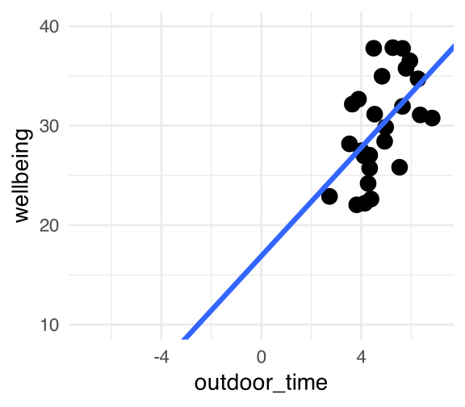
Mean-centered:
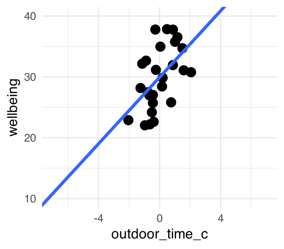
When a predictor is mean-centered, the intercept gives us the outcome value at the mean value of the predictor.
- This is because the intercept always tells us the outcome value when the predictor = 0.
- And now 0 represents the predictor’s mean.
Modelling with a mean-centered predictor
Mean-centre a predictor in R
We have a couple ways to subtract the mean from each observation using mutate().
The first option: explicitly subtract the mean (I prefer this way).
The second option: use scale() with center = TRUE, scale = FALSE.
I don’t like using scale() for mean-centering because its output is slightly weirdly formatted, and this prevents us from using certain functions later.
Fit the model after mean-centering
\[ \text{wellbeing} = \beta_0 + (\beta_1 \cdot \text{outdoor_time_c}) + \epsilon \]
Call:
lm(formula = wellbeing ~ outdoor_time_c, data = outdoors1)
Residuals:
Min 1Q Median 3Q Max
-6.2587 -3.1286 -0.5059 3.3094 8.6016
Coefficients:
Estimate Std. Error t value Pr(>|t|)
(Intercept) 29.9444 0.8645 34.637 <2e-16 ***
outdoor_time_c 2.7290 0.8830 3.091 0.005 **
---
Signif. codes: 0 '***' 0.001 '**' 0.01 '*' 0.05 '.' 0.1 ' ' 1
Residual standard error: 4.408 on 24 degrees of freedom
Multiple R-squared: 0.2847, Adjusted R-squared: 0.2549
F-statistic: 9.552 on 1 and 24 DF, p-value: 0.004998Intepreting coefficients after mean-centering
Coefficients:
Estimate Std. Error t value Pr(>|t|)
(Intercept) 29.9444 0.8645 34.637 <2e-16 ***
outdoor_time_c 2.7290 0.8830 3.091 0.005 ** (Intercept)
- When centered outdoor time is equal to zero, i.e., when outdoor time is at its mean value, the estimated mean wellbeing is 29.9.
outdoor_time_c
- When centered outdoor time increases by one hour, wellbeing increases by about 2.7 points.
- So:
- one hour above the mean: 29.9 + 2.7 = 32.6
- two hours above the mean: 29.9 + 2.7 + 2.7 = 35.3
- …
In general: When to mean-centre?
When would you mean-centre a predictor x?
- When
xdoesn’t have a meaningful/interpretable zero point.- e.g., if modelling
shoesize ~ height, a height of zero is nonsense. And so the predicted value forshoesizewill probably also be nonsense.
- e.g., if modelling
- When you want the model’s intercept to represent the estimated outcome at the mean value of
x.
When would you not mean-centre a predictor x?
- When
xhas a meaningful/interpretable zero point.- e.g., if modelling
skill ~ years of training, it makes sense to think about someone’s skills when they have zero years of training, that is, before their training begins. - e.g., if modelling
wellbeing ~ weeks in therapy, it makes sense to think about someone’s wellbeing after zero weeks of therapy, that is, before they’ve done any therapy.
- e.g., if modelling
- When you want the model’s intercept to represent the estimated outcome for whatever
x = 0already represents.
Refresher: Modelling multiple predictors
Today’s data: Now with two predictors
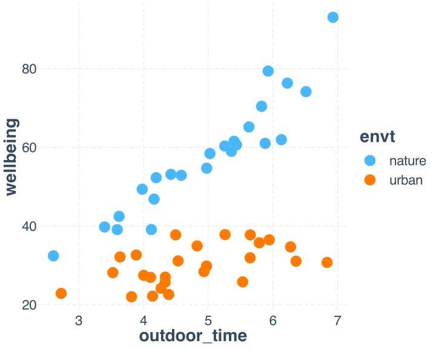
# A tibble: 12 x 3
wellbeing envt outdoor_time
<dbl> <fct> <dbl>
1 76.3 nature 6.22
2 22.9 urban 2.73
3 52.9 nature 4.58
4 59.0 nature 5.36
5 28.2 urban 3.53
6 65.2 nature 5.63
7 37.8 urban 5.65
8 32.4 nature 2.61
9 36.5 urban 5.94
10 28.4 urban 4.94
11 39.8 nature 3.40
12 32.7 urban 3.89How are outdoor time and environment associated with people’s wellbeing?
Fit the model (nothing is centered yet!)
\[ \text{wellbeing} = \beta_0 + (\beta_1 \cdot \text{outdoor_time}) + (\beta_2 \cdot \text{envt}) + \epsilon \]
Call:
lm(formula = wellbeing ~ outdoor_time + envt, data = outdoors)
Residuals:
Min 1Q Median 3Q Max
-15.1784 -4.1564 -0.6475 3.4551 20.1555
Coefficients:
Estimate Std. Error t value Pr(>|t|)
(Intercept) 19.0465 4.9210 3.870 0.000334 ***
outdoor_time 7.7724 0.9493 8.188 1.34e-10 ***
envturban -26.2466 1.9600 -13.391 < 2e-16 ***
---
Signif. codes: 0 '***' 0.001 '**' 0.01 '*' 0.05 '.' 0.1 ' ' 1
Residual standard error: 6.895 on 47 degrees of freedom
Multiple R-squared: 0.8511, Adjusted R-squared: 0.8447
F-statistic: 134.3 on 2 and 47 DF, p-value: < 2.2e-16Interpreting the model

Coefficients:
Estimate Std. Error t value Pr(>|t|)
(Intercept) 19.0465 4.9210 3.870 0.000334 ***
outdoor_time 7.7724 0.9493 8.188 1.34e-10 ***
envturban -26.2466 1.9600 -13.391 < 2e-16 ***Intercept:
- When
outdoor_time = 0andenvt = 0, the averagewellbeingis about 19.outdoor_time = 0means zero hours spent outdoors.envt = 0meansenvt = nature(the reference level).
Outdoor time:
- When
envt = 0 = nature, spending an additional hour outdoors is associated with an increase in wellbeing of about 8 points.
Environment:
- When
outdoor_time = 0hours spent outdoors, being in an urban environment is associated with a decrease in wellbeing of about 26 points.
Two core ideas for multiple regression
A model’s intercept is the mean outcome when every predictor in the model is at zero.
Each predictor’s slope represents the association of the given predictor with the outcome when every other predictor is at zero.
Modelling multiple predictors with mean-centering
Mean-centre outdoor_time
# A tibble: 6 x 4
wellbeing envt outdoor_time outdoor_time_c
<dbl> <fct> <dbl> <dbl>
1 76.3 nature 6.22 1.35
2 22.9 urban 2.73 -2.14
3 52.9 nature 4.58 -0.285
4 59.0 nature 5.36 0.489
5 28.2 urban 3.53 -1.34
6 65.2 nature 5.63 0.761Visualise the mean-centered data

Fit the model (with mean-centered predictor)
\[ \text{wellbeing} = \beta_0 + (\beta_1 \cdot \text{outdoor_time_c}) + (\beta_2 \cdot \text{envt}) + \epsilon \]
Call:
lm(formula = wellbeing ~ outdoor_time_c + envt, data = outdoors)
Residuals:
Min 1Q Median 3Q Max
-15.1784 -4.1564 -0.6475 3.4551 20.1555
Coefficients:
Estimate Std. Error t value Pr(>|t|)
(Intercept) 56.8936 1.4105 40.335 < 2e-16 ***
outdoor_time_c 7.7724 0.9493 8.188 1.34e-10 ***
envturban -26.2466 1.9600 -13.391 < 2e-16 ***
---
Signif. codes: 0 '***' 0.001 '**' 0.01 '*' 0.05 '.' 0.1 ' ' 1
Residual standard error: 6.895 on 47 degrees of freedom
Multiple R-squared: 0.8511, Adjusted R-squared: 0.8447
F-statistic: 134.3 on 2 and 47 DF, p-value: < 2.2e-16Interpreting the model with mean-centering
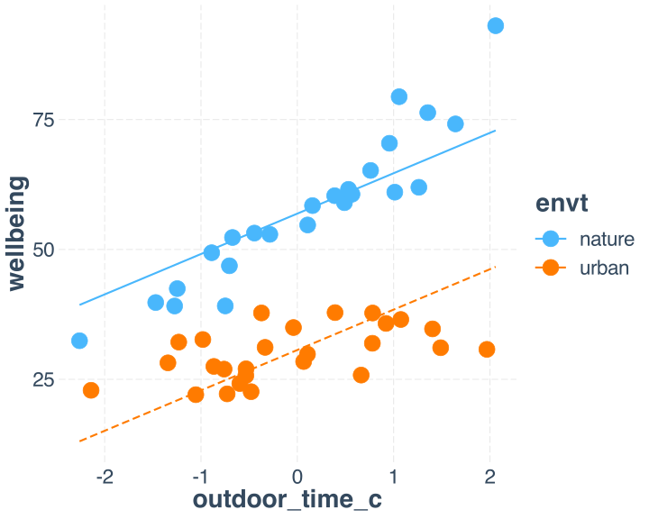
Coefficients:
Estimate Std. Error t value Pr(>|t|)
(Intercept) 56.8936 1.4105 40.335 < 2e-16 ***
outdoor_time_c 7.7724 0.9493 8.188 1.34e-10 ***
envturban -26.2466 1.9600 -13.391 < 2e-16 ***Intercept:
- When
outdoor_time_c = 0andenvt = 0, the averagewellbeingis about 57.outdoor_time_c = 0means at the mean of time spent outdoorsenvt = 0meansenvt = nature(the reference level).
Outdoor time:
- When
envt = 0 = nature, spending an additional hour outdoors is associated with an increase in wellbeing of about 8 points.
Environment:
- When
outdoor_time_c = 0, so when outdoor time is at its mean, being in an urban environment is associated with a decrease in wellbeing of about 26 points.
But: This model is not quite right for this data
This model is not quite right for this data

- This model assumes that whatever your environment, an extra hour of being outdoors improves your wellbeing by about 8.
- This model assumes that whatever your time spent outdoors, being in an urban environment reduces your wellbeing by about 26 points.
But these assumptions don’t totally match the data.
Back to Wooclap (code JXOBYL): This model fails to capture some patterns in the data. Can you try to put into words what it misses?
Wouldn’t it be better if…


What if the association between time outdoors and wellbeing could be different, depending on your environment?
- In nature, more time outdoors improves wellbeing more than in an urban environment.
- In an urban environment, time outdoors still helps, but less than in nature.
“Depends on” \(\rightarrow\) Interactions
“Depends on” \(\rightarrow\) Interactions
When the association between one predictor and the outcome depends on the value of another predictor, we are dealing with an interaction between predictors.
How do we tell our model that “it depends”?
We need an extra bit of information to tell us “how much does the association between outdoor time and wellbeing change between natural and urban environments”?
This information appears in the model as the product of the two original variables (that is, both original variables multiplied together.)
The previous model:
\[ \text{wellbeing} = \beta_0 + (\beta_1 \cdot \text{outdoor_time}) + (\beta_2 \cdot \text{envt}) + \epsilon \]
The updated model that includes an interaction:
\[ \text{wellbeing} = \beta_0 + (\beta_1 \cdot \text{outdoor_time}) + (\beta_2 \cdot \text{envt}) + (\beta_3 \cdot \text{outdoor_time} \cdot \text{envt}) + \epsilon \]
This updated model says that wellbeing is predicted by
- some amount of
outdoor_time - some amount of
envt - and a little addition to one of those amounts, depending on the value of the other variable.
(Why multiplication? See appendix!)
Interactions in R
Interactions in R
In R syntax, the interaction term is shown by a colon : between the two interacting predictors.
Because this can be a lot to write out, a shortcut is to use *:
Both versions accomplish the exact same thing.
Fit our first interaction model
\[ \text{wellbeing} = \beta_0 + (\beta_1 \cdot \text{outdoor_time}) + (\beta_2 \cdot \text{envt}) + (\beta_3 \cdot \text{outdoor_time} \cdot \text{envt}) + \epsilon \]
Call:
lm(formula = wellbeing ~ outdoor_time * envt, data = outdoors)
Residuals:
Min 1Q Median 3Q Max
-10.0029 -2.9519 -0.4881 3.1881 11.2969
Coefficients:
Estimate Std. Error t value Pr(>|t|)
(Intercept) -3.3876 4.5651 -0.742 0.46183
outdoor_time 12.2887 0.8982 13.682 < 2e-16 ***
envturban 20.2899 6.5022 3.120 0.00312 **
outdoor_time:envturban -9.5597 1.3067 -7.316 3.07e-09 ***
---
Signif. codes: 0 '***' 0.001 '**' 0.01 '*' 0.05 '.' 0.1 ' ' 1
Residual standard error: 4.738 on 46 degrees of freedom
Multiple R-squared: 0.9312, Adjusted R-squared: 0.9267
F-statistic: 207.4 on 3 and 46 DF, p-value: < 2.2e-16Interpreting coefficients in interaction models
Coefficients:
Estimate Std. Error t value Pr(>|t|)
(Intercept) -3.3876 4.5651 -0.742 0.46183
outdoor_time 12.2887 0.8982 13.682 < 2e-16 ***
envturban 20.2899 6.5022 3.120 0.00312 **
outdoor_time:envturban -9.5597 1.3067 -7.316 3.07e-09 ***(Intercept): When all predictors are zero, the average wellbeing is about –3.
outdoor_time = 0means when zero hours are spent outdoors.envt = 0meansenvt = nature(the reference level).
outdoor_time: Only when envt = 0 = nature, spending an additional hour outdoors is associated with an increase in wellbeing of about 12 points.
envturban: Only when outdoor_time = 0 hours spent outdoors, being in an urban environment is associated with an increase in wellbeing of about 20 points.
outdoor_time:envturban: When we change environment from natural to urban, the association between outdoor_time and wellbeing changes by about –10.
- When
envt = natural, the association is the one estimated above, 12 (theoutdoor_timecoef above). - When
envt = urban, the association changes! 12 (outdoor_timecoef) – 10 (interaction coef) = 2-ish.
Investigating interactions with probe_interaction()
A visual intuition for each coefficient
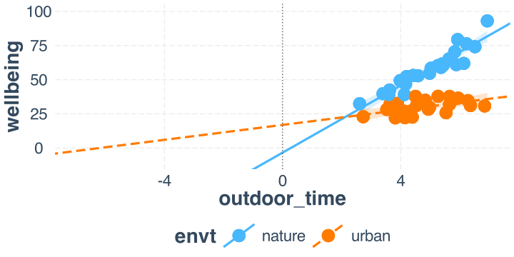A visual intuition: Intercept
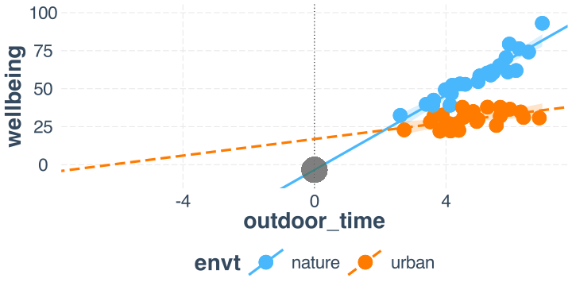(Intercept): When all predictors are zero, the average wellbeing is about –3.
outdoor_time = 0means when zero hours are spent outdoors.envt = 0meansenvt = nature(the reference level).
A visual intuition: outdoor_time
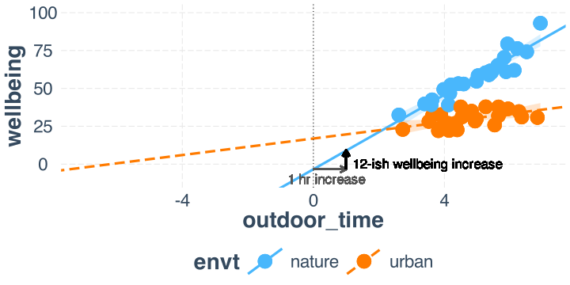outdoor_time: Only when envt = 0 = nature, spending an additional hour outdoors is associated with an increase in wellbeing of about 12 points.
A visual intuition: envturban
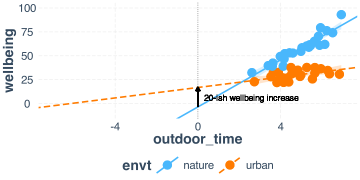envturban: Only when outdoor_time = 0 hours spent outdoors, being in an urban environment is associated with an increase in wellbeing of about 20 points.
A visual intuition: outdoor_time:envturban

outdoor_time:envturban: When we change environment from natural to urban, the association between outdoor_time and wellbeing changes by about –10.
To get the slope for urban, we add up the slope for natural and the interaction coefficient: 12 + (–10) = 2.
Changing the interpretation by mean-centering
Changing the interpretation by mean-centering
Not mean-centered:
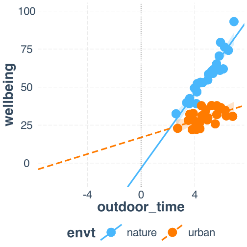
Mean-centered:
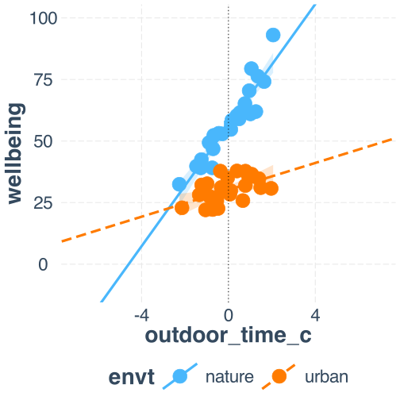
Fit the new model
\[ \text{wellbeing} = \beta_0 + (\beta_1 \cdot \text{outdoor_time_c}) + (\beta_2 \cdot \text{envt}) + (\beta_3 \cdot \text{outdoor_time_c} \cdot \text{envt}) + \epsilon \]
Call:
lm(formula = wellbeing ~ outdoor_time_c * envt, data = outdoors)
Residuals:
Min 1Q Median 3Q Max
-10.0029 -2.9519 -0.4881 3.1881 11.2969
Coefficients:
Estimate Std. Error t value Pr(>|t|)
(Intercept) 56.4513 0.9712 58.124 < 2e-16 ***
outdoor_time_c 12.2887 0.8982 13.682 < 2e-16 ***
envturban -26.2602 1.3469 -19.496 < 2e-16 ***
outdoor_time_c:envturban -9.5597 1.3067 -7.316 3.07e-09 ***
---
Signif. codes: 0 '***' 0.001 '**' 0.01 '*' 0.05 '.' 0.1 ' ' 1
Residual standard error: 4.738 on 46 degrees of freedom
Multiple R-squared: 0.9312, Adjusted R-squared: 0.9267
F-statistic: 207.4 on 3 and 46 DF, p-value: < 2.2e-16Interpreting coefs with centering, interactions
Coefficients:
Estimate Std. Error t value Pr(>|t|)
(Intercept) 56.4513 0.9712 58.124 < 2e-16 ***
outdoor_time_c 12.2887 0.8982 13.682 < 2e-16 ***
envturban -26.2602 1.3469 -19.496 < 2e-16 ***
outdoor_time_c:envturban -9.5597 1.3067 -7.316 3.07e-09 ***(Intercept): When all predictors are zero, the average wellbeing is about 56.
outdoor_time_c = 0means when the average number of hours are spent outdoorsenvt = 0meansenvt = nature(the reference level).
outdoor_time_c: Only when envt = 0 = nature, spending an additional hour outdoors is associated with an increase in wellbeing of about 12 points.
envturban: Only when outdoor_time_c = 0, which represents the average number of hours spent outdoors, being in an urban environment is associated with an decrease in wellbeing of about 26 points.
outdoor_time_c:envturban: When we change environment from natural to urban, the association between outdoor_time_c and wellbeing changes by about –10.
- When
envt = natural, the association is about 12 (theoutdoor_time_ccoef above). - When
envt = urban, the association is about 12 – 10 = 2-ish.
The #1 key to interpreting every linear model ever
For each predictor in your model, know what zero represents.
Building an analysis workflow, feat. interactions

Building an analysis workflow: A new evolution
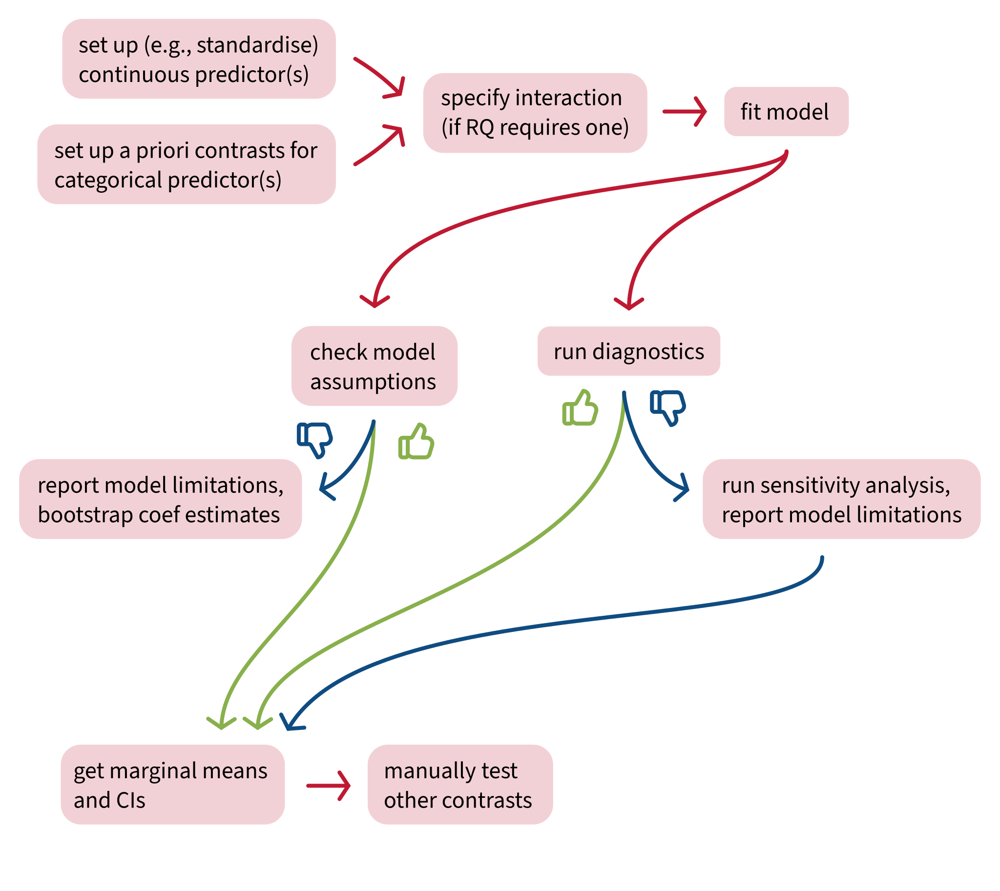
Back matter
Revisiting this week’s learning objectives
What does it mean to “mean-centre” a variable?
- Transform the variable so that its mean is equal to zero.
- To mean-centre a variable, subtract that variable’s mean from every observation.
How does mean-centering a predictor affect how we interpret the model’s intercept and other slope coefficients?
- The key idea: the mean of the predictor is represented by the number zero.
- So in a model
y ~ x1_c, the intercept represents the estimated outcomeywhen the predictorx1_cis at its mean of zero. - If a model contains other predictors, e.g.,
y ~ x1_c + x2, then the coefficient forx2represents the association betweenx2andywhenx1_cis at its mean of zero.
Revisiting this week’s learning objectives
How do we tell a model that an association between a predictor and the outcome depends on another predictor?
- We include an interaction between those two predictors in the model.
How do interactions change what a model’s slope coefficients mean?
- When a model includes an interaction, the slope coefficients must be interpreted as conditional effects: they only apply when the other interacting predictor is 0. (In other words, they are “conditional” on the other predictor being 0.)
- For example, in a model like
y ~ x1 * x2, the coefficient forx1tells us the association betweenx1andy, but only whenx2is 0. - This is because the association between
x1andydepends onx2. So the association betweenx1andymight be a different number whenx2is 1, or 2, or …
This week
Tasks:

Attend your lab and work together on the exercises
Support:

Help each other on the Piazza forum

Complete the weekly quiz

Attend office hours (see Learn page for details)
Appendix
Why multiplication?
In the basic model without the interaction, the effect of outdoor_time on wellbeing is just \(\beta_1\), a single constant number.
\[
\text{wellbeing} = \beta_0 + (\underbrace{\beta_1}_{\text{effect of}\\ \text{outdoor}\\ \text{time}} \cdot \text{outdoor_time}) + (\beta_2 \cdot \text{envt}) + \epsilon
\] But if the effect of outdoor_time depends on envt, then the effect isn’t just a single constant number. It’s more like “some number plus some amount of envt”.
To represent “some amount of envt, let’s use \(\beta_3 \cdot \text{envt}\).
\[ \text{wellbeing} = \beta_0 + (\underbrace{(\overbrace{\beta_1}^{\text{some}\\ \text{number}} + \overbrace{\beta_3 \cdot \text{envt}}^{\text{some amount}\\ \text{of environment}})}_{\text{effect of outdoor time}} \cdot \text{outdoor_time}) + (\beta_2 \cdot \text{envt}) + \epsilon \]
And if you expand this expression by multiplying both \(\beta_1\) and \(\beta_3 \cdot \text{envt}\) by \(\text{outdoor_time}\), you get the final linear expression we use for this model:
\[ \text{wellbeing} = \beta_0 + (\beta_1 \cdot \text{outdoor_time}) + (\beta_2 \cdot \text{envt}) + (\beta_3 \cdot \text{outdoor_time} \cdot \text{envt}) + \epsilon \]
Simple slopes for the no-interaction not-centered model
The linear expression:
\[ \widehat{wellbeing} = \beta_0 + (\beta_1 \cdot outdoor\_time) + (\beta_2 \cdot envt) \\ \]
Substituting in the coefficient values:
\[ \widehat{wellbeing} = 19 + (7.8 \cdot outdoor\_time) + (-26.2 \cdot envt) \\ \]
When \(envt = 0\) (nature):
\[ \begin{align} \widehat{wellbeing}_{nature} &= 19 + (7.8 \cdot outdoor\_time) + (-26.2 \cdot 0) \\ \widehat{wellbeing}_{nature} &= 19 + (7.8 \cdot outdoor\_time) \\ \end{align} \]
When \(envt = 1\) (urban):
\[ \begin{align} \widehat{wellbeing}_{urban} &= 19 + (7.8 \cdot outdoor\_time) + (-26.2 \cdot 1) \\ \widehat{wellbeing}_{urban} &= 19 - 26.2 + (7.8 \cdot outdoor\_time) \\ \widehat{wellbeing}_{urban} &= 9 + (7.8 \cdot outdoor\_time) \\ \end{align} \]
Simple slopes for the interaction (non-centered) model
\[ \begin{align} \widehat{wellbeing} &= \beta_0 + (\beta_1 \cdot out) + (\beta_2 \cdot envt) + (\beta_3 \cdot out \cdot envt)\\ \widehat{wellbeing} &= -3.4 + (12.3 \cdot out) + (20.3 \cdot envt) + (-9.6 \cdot out \cdot envt)\\ \end{align} \]
When \(envt = 0\) (nature):
\[ \begin{align} \widehat{wellbeing}_{nature} &= -3.4 + (12.3 \cdot out) + (20.3 \cdot envt) + (-9.6 \cdot out \cdot envt)\\ \widehat{wellbeing}_{nature} &= -3.4 + (12.3 \cdot out) + (20.3 \cdot 0) + (-9.6 \cdot out \cdot 0)\\ \widehat{wellbeing}_{nature} &= -3.4 + (12.3 \cdot out)\\ \end{align} \]
When \(envt = 1\) (urban):
\[ \begin{align} \widehat{wellbeing}_{urban} &= -3.4 + (12.3 \cdot out) + (20.3 \cdot envt) + (-9.6 \cdot out \cdot envt)\\ \widehat{wellbeing}_{urban} &= -3.4 + (12.3 \cdot out) + (20.3 \cdot 1) + (-9.6 \cdot out \cdot 1)\\ \widehat{wellbeing}_{urban} &= -3.4 + 20.3 + (12.3 \cdot out) + (-9.6 \cdot out)\\ \widehat{wellbeing}_{urban} &= 16.9 + (12.3 \cdot out) + (-9.6 \cdot out)\\ \widehat{wellbeing}_{urban} &= 16.9 + ((12.3 - 9.6) \cdot out) \\ \widehat{wellbeing}_{urban} &= 16.9 + (2.7 \cdot out)\\ \end{align} \]